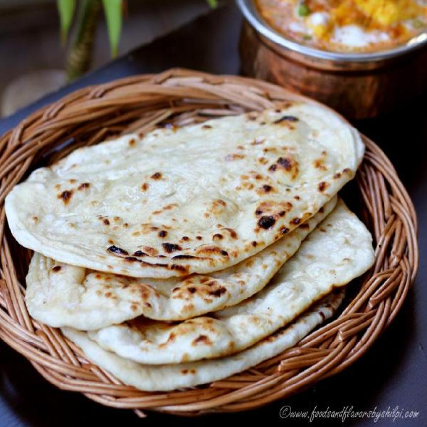

Naan

- 2 cups all-purpose flour
- 1 teaspoon active dry yeast
- 1 teaspoon sugar
- 1/2 teaspoon salt
- 1/2 cup warm milk
- 1/4 cup plain yogurt
- 2 tablespoons melted butter or ghee
- 2 tablespoons oil
- 1/4 cup water (as needed)
- Optional: minced garlic, chopped cilantro, or nigella seeds for topping
- In a small bowl, dissolve the sugar in warm milk. Sprinkle the yeast over the top and let it sit for about 5-10 minutes until frothy.
- In a large mixing bowl, combine the flour and salt. Make a well in the center and add the yeast mixture, yogurt, melted butter or ghee, and oil.
- Mix the ingredients together and knead the dough until it becomes smooth and elastic. If the dough is too sticky, add a little flour; if too dry, add a little water.
- Cover the dough with a damp cloth or plastic wrap and let it rise in a warm place for about 1-2 hours, or until it has doubled in size.
- Preheat your oven to its highest setting (usually around 500°F or 260°C) and place a baking sheet or pizza stone inside to heat up.
- Once the dough has risen, punch it down and divide it into 6-8 equal portions. Roll each portion into a ball and then flatten it into an oval or tear shape using a rolling pin.
- If desired, brush the surface of the naan with melted butter or ghee and sprinkle with minced garlic, chopped cilantro, or nigella seeds.
- Carefully transfer the rolled naan onto the preheated baking sheet or pizza stone and bake for 2-3 minutes, or until the naan puffs up and gets golden brown spots.
- Remove the naan from the oven and brush with additional melted butter or ghee if desired. Serve hot with your favorite curry or dish.